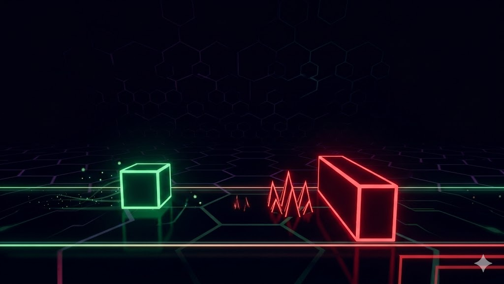

Un juego arcade de supervivencia. Controla el cubo verde, esquiva los obstáculos rojos y consigue la máxima puntuación posible.

En NEONDASH, la velocidad aumenta. Debes mantener la concentración para saltar en el momento y evita que
los bloques rojos terminen tu partida. ¡Compite contra otros jugadores y escala en el ranking!
Descomprime el archivo RAR y ejecuta "iniciar.bat". Esto abrirá la página web automáticamente y mantendrá
el servidor activo para el ranking global.
el archivo "main.exe" y escribe tu nombre de jugador. Pulsa la barra espaciadora para controlar el cubo
verde, esquiva los obstáculos rojos y consigue la máxima puntuación posible.